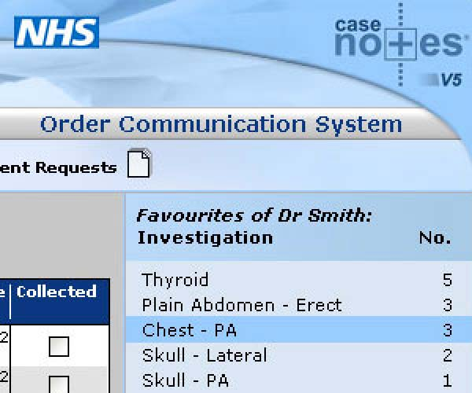

-
Alamy Search
An improved, responsive search interface with easier filtering and better SEO, leading to increased traffic and sales.
UI & UX, Branding, Imagery, MarketingSearch at alamy.com -
Waitrose Direct Website
I was responsible for the creative direction and assets, and was heavily involved in UX. I was also involved in photoshoots...
UI & UX, Branding, Imagery, MarketingWaitrose Direct -
Essential Christmas Card
As the creative lead at Essential Communications, I was asked to produce a company Christmas card. This was an opportunity to have fun!
Print Design, Branding, Imagery, Marketing -
GAME Reward App
This GAME Reward app was named 'Vouchercodes Mobile Technology of the Year' in the BT RetailWeek Technology Awards 2013.
UI & UX, ImageryMore about GAME Reward -
back to top
Microsoft Tech Companion App
A Microsoft top app which gives both developers and IT professionals access to Microsoft information from phones, tablets and PCs.
UI & UX, Presentations, Branding, ImageryNHS RFC Leaflet
A simple 12 page printed leaflet created for the NHS Royal Free Charity.
Print Design, ImageryNHS RFC LeafletAlamy Image Manager
I was instrumental in producing this large scale tool which combines clarity with rich functionality, enabling efficient image managment and increased productivity.
UI & UX, Print Design, Branding, ImageryXbox Retailer Emails
I created templates for Xbox emails which allowed retailers to add their own details.
MarketingKelgray Website
Website design for CMS integration, solutions branding, and a series of animated eBooks.
UI & UX, Presentations, Print Design, Imagery, Motion Graphics, MarketingKelgray Website- 
NHS Case Notes
A brand new UI and improved user experience on an existing online NHS app.
UI & UX, Branding, Imagery, MiscNHS Case notesRoche & GSK Patient Leaflet
A multi-page document for patients who have been diagnosed with osteoporosis. Designed to be visually appealing using...
Print Design, ImageryRoche & GSK Patient LeafletWest Oxfordshire District Council Website
I was asked by 3chillies to produce a brand new look and feel for the West Oxfordshire District Council website.
UI & UX, Branding, Imagery, MarketingWest Oxfordshire District Council WebsiteBanks on Sentence App
A multi-platform app version of Banks on Sentence 2014, with search, highlighting, annotation and tagging functionality.
UI & UX, Branding, ImageryBanks on Sentence App
Filter